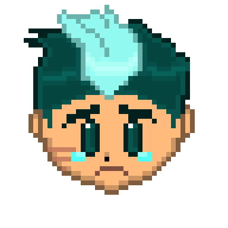

"Do what he says, otherwise you're useless."
"E-Excuse me?"
"You heard what I said, you're not a hero but you're not a person either you are just a toy to be used and thrown away once the big scary darkness goes away." Serell glares at you with a hurt expression but you don't seem to care.
.png)
"What is all this hate coming from? Why do you dislike me so much?"
"You whine about being the greatest when in reality the only reason why you gain such power is that someone pitied you, I've gotten sick and tired of the complaints and tired of your presence."
"Now be a good boy toy and never come back here." You taunt at his face expecting him to charge at you for such awful things you said. Instead, he begins to tear up and walks away not before saying-
"You are a horrible person."
You never meet him again until one day you ended up being ambushed by monsters. Before you end up being killed he ends up finding you and killing the monsters. With a glare, he throws a potion at you and spits out the last words you ever heard from him.
"Know this I could have and should have let you die but I am better than that and you. Although if we meet again I will slay you down myself, and that will be the only sin I will have no regrets having."
The end!